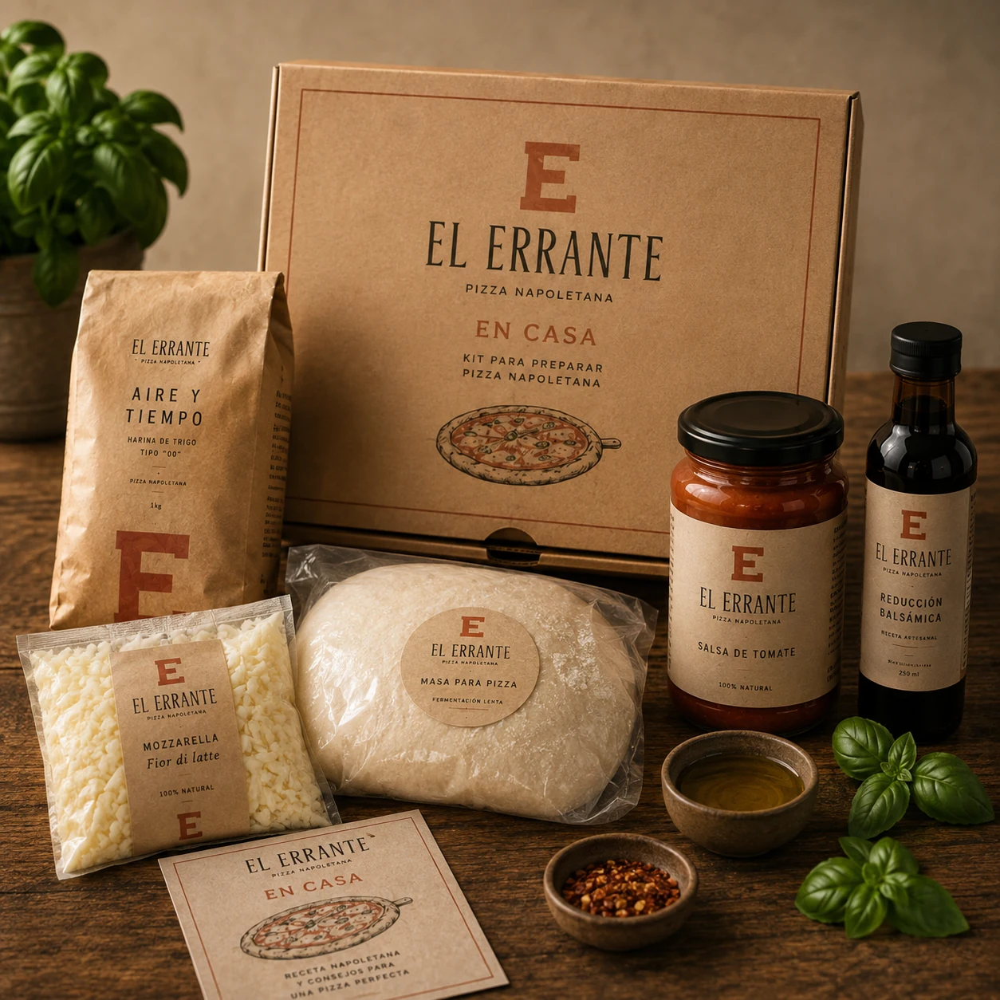
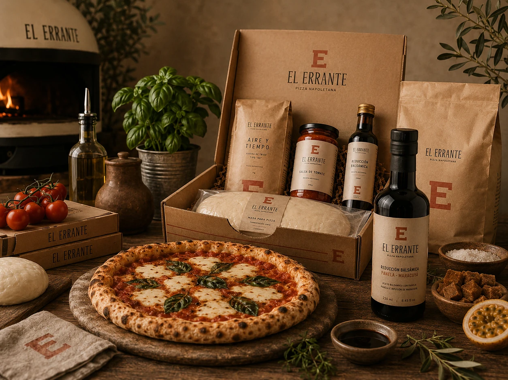

Presentación
Unidades, peso o formato para saber exactamente qué llega.

Tienda El Errante
Puedes comenzar desde la harina y construir la masa, recibir una base para personalizar, terminar una pizza completa o llevar uno de los acabados de nuestra despensa.
Antes de elegir
La diferencia principal no está en una jerarquía de calidad: está en qué parte del proceso quieres asumir.
Tú mezclas, fermentas, divides, boleas, abres y horneas. Nosotros aportamos el blend y el método que seguimos desarrollando alrededor de él.
Nosotros resolvemos masa, fermentación, apertura y primera cocción. Tú decides cómo termina.
Recetas construidas para volver al fuego en tu horno y completar estructura, fundencia y aroma antes de servir.
Tomate y reducciones pensados para aportar acidez, profundidad o contraste en pequeñas cantidades.
Catálogo
Entra a la ficha antes de comprar: encontrarás presentación, perfil, terminado y condiciones que debes revisar en el empaque vigente.
En Casa
Las pizzas En Casa pasan primero por nuestro proceso y se desarrollan sabiendo que tendrán una última transformación en un horno doméstico.
A esa investigación la llamamos Segundo Fuego. No reemplaza las instrucciones del producto: la ficha y la etiqueta vigente mandan para preparación, conservación, alérgenos, vida útil y lote.
En Casa nombra la línea. Segundo Fuego explica cómo la pensamos.

Despensa
Trabajamos el tomate buscando una relación limpia entre identidad, acidez, concentración y humedad. Las reducciones están pensadas para entrar al final y modificar contraste, no para cubrir una preparación.
La reducción de panela y maracuyá, por ejemplo, trabaja un dulzor cálido y una nota aromática y ácida. Su dosis debe estar al servicio del conjunto.
Ver la despensaComprar con información
Antes de confirmar, revisa siempre la ficha y la etiqueta real.
Unidades, peso o formato para saber exactamente qué llega.
Temperatura y cadena de frío o almacenamiento seco según la referencia.
Qué debes hacer y qué señales indican que el producto está listo.
Las rutas para congelados y productos secos pueden ser diferentes y se confirman antes de preparar el pedido.